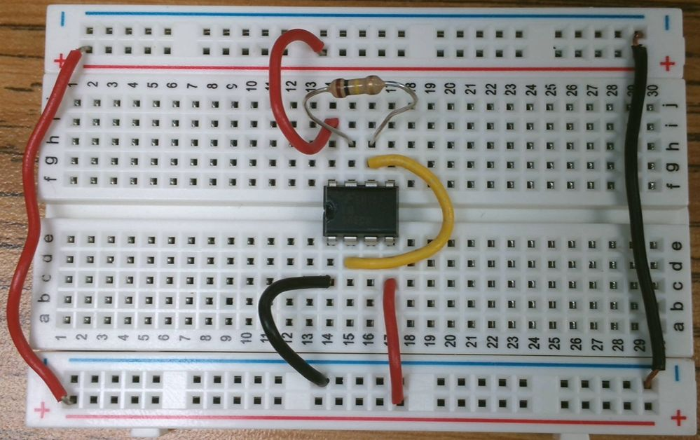
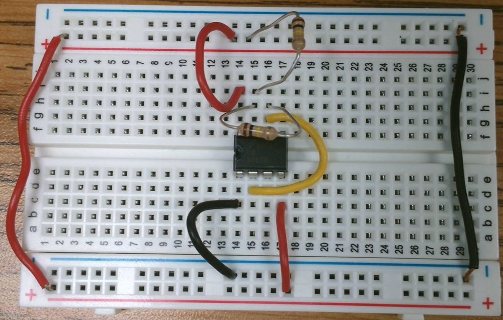
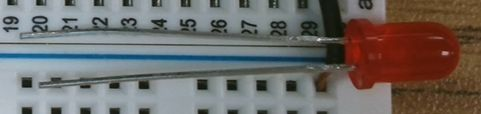
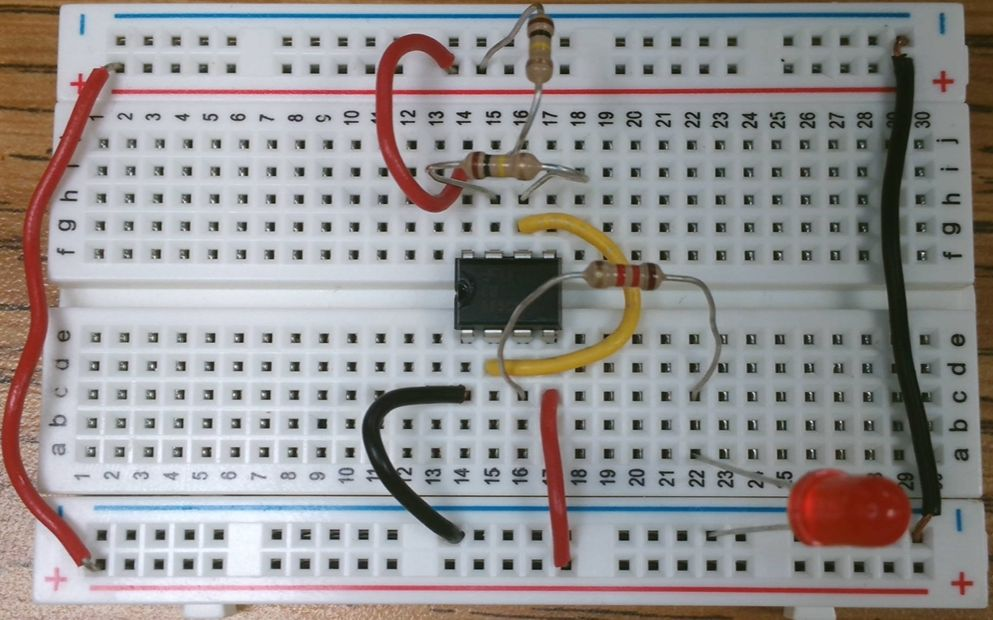

The Breadboard
The Breadboard
The bus connects each row all the way across.
But the two do not connect to each other.

Place the IC. Pay attention to the notch or dot — it should be on the left side.

While we are wiring things up, let's connect pin 2 to pin 6.

The first 100K resistor connects pin 6 and 7 of the 555.


The second 100K resistor connects pin 7 to positive voltage (red bus).


The third resistor, 1.2KΩ or 1,200Ω, is painted:
Brown, Red, Red, Gold


The 1.2KΩ resistor connects our LED to the 555.
An LED is polarized — it only works in one direction. You can tell by the length of the legs.

An LED is polarized — it only works in one direction.
You can tell by the length of the legs or look for the flat side at the bottom of the LED.


An LED is polarized — it only works in one direction.
The short leg or flat side goes to the blue bus. The long leg connects to the 1.2K resistor.


Next we need to connect the battery.
The Red wire connects to the Red bus.
The Blue wire connects to the Black bus.